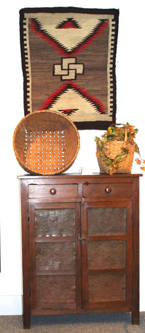

|
|
FRANCINE IS ALWAYS INTERESTED IN BUYING
SINGLE ITEMS TO COMPLETE ESTATES
Francine is always buying quality antique furniture and antique accessories (china, cut glass, porcelain, lighting, etc.), collectables, dolls, jewelry (estate and costume), marine items, paintings, and weathervanes. Simply stated, if you see a piece(s) in one of our photos that is similar to or the same as what you are seeking to sell, them Francine would be interested in it.
Many ask: how do I go about selling to Francine? Initially you should call Francine, 207-843-7449, and seek to describe what it is that you have to sell. If it is a day when the shop is not open, simply leave a message on the answer phone indicating that you have items to sell along with your name, telephone number and the best time for Francine to call you back.
Another way to sell to Francine is to bring the piece(s) to the shop for Francine to look at. If this is not feasible for you due to the number of pieces that you have to sell or the distance you are from the shop, then we suggest that you send Francine digital photos of the piece(s) that you are interested in selling via email to benjie@mid-coast-antiques.com and provide a brief description of the piece(s) condition.
Some ask: will Francine come to my home to look at the piece(s) you have to sell? The answer is yes, with a “qualifier.” The “qualifier” is what do you have to sell, and how far are you, distance wise, from Holden? With today’s cost of gasoline, to drive 30 or so miles one way to look at a few pieces normally is not cost effective without Francine first seeking to qualify with you, or with the aid of digital photos, what it is you are seeking to sell.
Whether you bring the piece(s)to the shop or provide digital photos for Francine, if Francine is not interested in buying some or any of your items, she will be happy to provide you with the name(s) of other antique dealers or auctioneers that would possibly be interested in the piece(s) you are seeking to sell.
The one phase we hear frequently is: “I am responsible for selling my parent’s, or grandparent’s home and need to sell its contents. I have already hauled 3 loads of “junk” to the dump that was in the attic, basement, barn, etc.” We would advise you not to haul what you feel is “junk” to the dump until Francine, or for that matter, any other dealer that you contact, has looked through what you feel is “junk”. Sometimes there are pieces in the “junk” that have value. Remember the old saying: “one man’s trash, may be another man’s treasure.” Other times, it may truly be “junk”, but by having someone look first, you may be pleasantly surprised.
REMEMBER, FRANCINE IS ALWAYS INTERESTED IN BUYING SINGLE ITEMS
TO COMPLETE ESTATES...
June 1st - October 15th
— Wednesday thru Saturday 10AM - 5PM
October 15th - May 31st — Tuesday thru Thursday 10 AM – 5 PM Fine Period
Furniture: Queen Ann Thru American Country
We Are
Always Interested In Buying Single Items to Complete
Estates of
Quality Furniture, Antique Accessories and Collectables
|
|